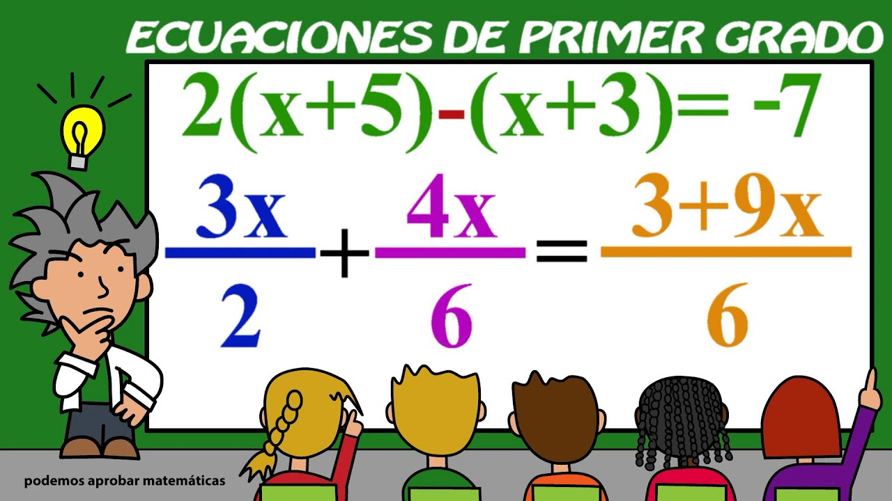

- Bienvenidos y bienvenidas a esta presentación dedicada a un concepto fundamental en el mundo de las matemáticas: las ecuaciones de primer grado. Las ecuaciones lineales, como también se les conoce, son un elemento clave en la resolución de problemas cotidianos y en la comprensión de relaciones lineales entre variables.

Así que, sin más preámbulos, sumérgete con nosotros en el fascinante mundo de las ecuaciones lineales y descubre cómo estas simples expresiones matemáticas pueden revelar soluciones valiosas en una variedad de escenarios. ¡Comencemos nuestro viaje hacia la comprensión y dominio de las ecuaciones de primer grado!